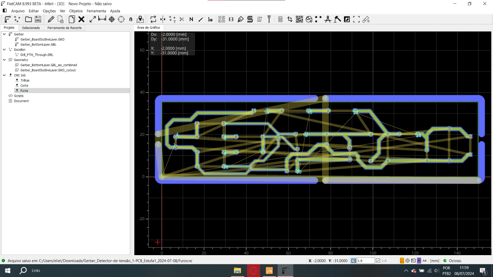
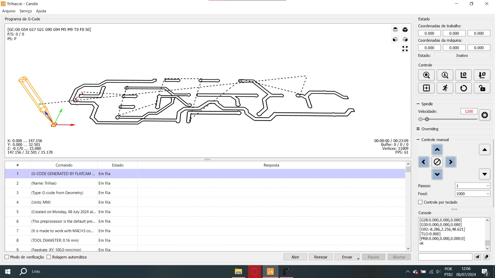
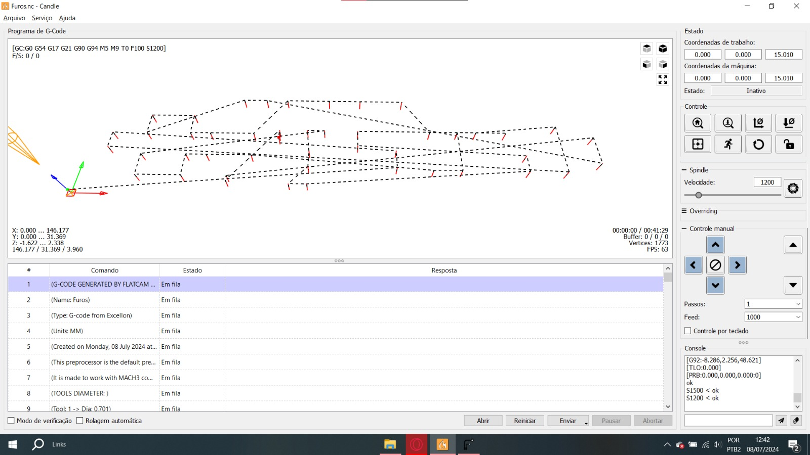
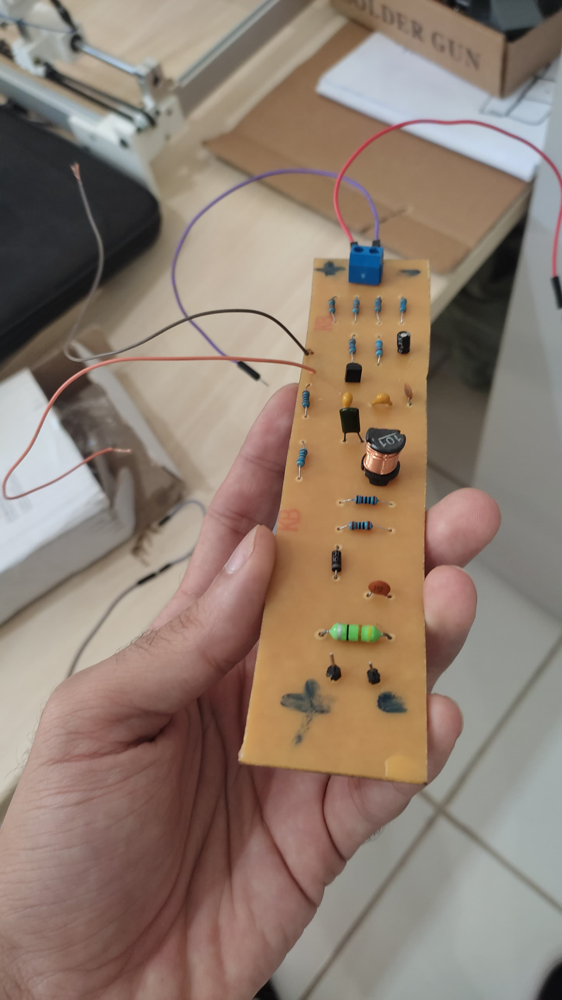
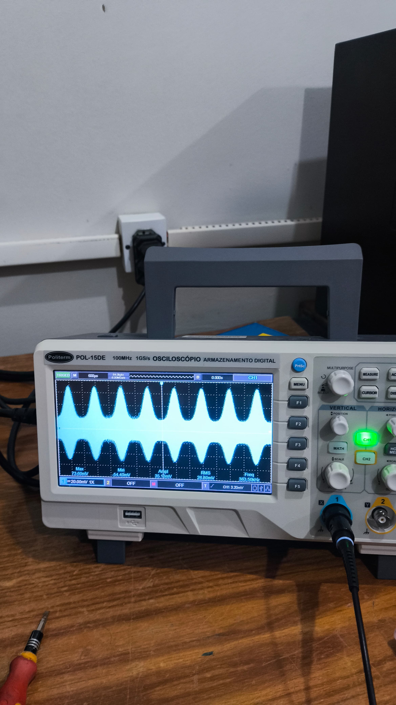

Chapter 9 Transmissor AM
9.1 O que é um Transmissor AM
A modulação de amplitude (AM) é uma técnica essencial na radiocomunicação, que permite a transmissão de informações através de uma onda portadora de alta frequência. Neste processo, a amplitude da onda portadora é variada proporcionalmente à amplitude do sinal de mensagem que contém a informação a ser transmitida. A modulação de amplitude é amplamente utilizada em radiodifusão AM e em sistemas de comunicação de longa distância devido à sua simplicidade e eficiência.
9.1.1 Princípios de Funcionamento
O funcionamento de um transmissor AM baseia-se em três componentes principais: o gerador de portadora, o modulador e o amplificador de potência. O gerador de portadora cria uma onda senoidal de alta frequência constante. Em seguida, o modulador varia a amplitude desta onda conforme o sinal de mensagem. Finalmente, o amplificador de potência aumenta a amplitude do sinal modulado para que ele possa ser transmitido eficientemente através de uma antena.
9.1.2 Vantagens e Desvantagens
A modulação de amplitude possui diversas vantagens, como a simplicidade dos circuitos e a capacidade de ser demodulada facilmente. No entanto, também apresenta desvantagens, como a susceptibilidade a interferências e ruídos, bem como uma eficiência de potência relativamente baixa, já que uma grande parte da energia é utilizada para transmitir a portadora em vez do sinal de mensagem.
9.2 Descrição do Projeto
Um dos projetos mais desafiadores e enriquecedores que realizei foi a construção de um transmissor AM. O objetivo deste projeto foi desenvolver um sistema de modulação de amplitude eficiente e preciso, capaz de transmitir informações de maneira clara e confiável. Este projeto envolveu diversas etapas, desde a concepção inicial até a montagem e testes finais.
9.2.1 Componentes e Materiais
Para gerar a portadora, utilizei um oscilador Colpitts devido à sua estabilidade e capacidade de operar em alta frequência. O circuito oscilador Colpitts foi projetado utilizando resistores, indutores, bobinas, capacitores e um filtro. Estes componentes foram escolhidos por suas características específicas que garantem a precisão e eficiência do circuito. Além disso, utilizei um gerador de sinal para criar o sinal de mensagem e um osciloscópio para observar e analisar o sinal de saída.
9.2.1.1 Resistores
Os resistores foram selecionados para controlar os níveis de corrente e tensão no circuito. Eles são fundamentais para garantir a estabilidade do oscilador e a correta modulação do sinal.
9.2.1.2 Indutores e Bobinas
Os indutores e bobinas foram escolhidos pela sua capacidade de armazenar energia magnética e por suas propriedades de ressonância, que são cruciais para a operação do oscilador em alta frequência.
9.2.2 Objetivo do Projeto
O principal objetivo do projeto foi desenvolver um transmissor AM que pudesse modular um sinal de entrada (mensagem) e transmitir uma portadora modulada com alta eficiência e precisão. Este projeto não só envolveu a construção física do transmissor, mas também a aplicação de princípios teóricos de modulação de amplitude e análise de circuitos de alta frequência.
9.3 Cálculos e Simulação
A primeira etapa do projeto foi realizar os cálculos teóricos necessários para projetar o circuito oscilador Colpitts. O objetivo era que o oscilador operasse em uma frequência de aproximadamente 400 kHz, uma frequência comum para transmissões AM de curto alcance.
9.3.1 Cálculos Teóricos
Os cálculos teóricos envolveram a determinação dos valores dos componentes do circuito tanque do oscilador Colpitts, que consiste em capacitores e indutores. A frequência de ressonância do oscilador é dada pela fórmula:
\[ f = \frac{1}{2\pi\sqrt{LC}} \]
Onde \(L\) é a indutância e \(C\) é a capacitância do circuito. Utilizando esta fórmula, selecionei valores apropriados para \(L\) e \(C\) que resultassem na frequência desejada de 400 kHz. A precisão destes cálculos é crucial, pois qualquer desvio pode afetar a estabilidade e a performance do oscilador.
9.3.2 Simulação no LTSpice
Após os cálculos, utilizei o software LTSpice para simular o circuito. A simulação é uma etapa vital, pois permite verificar o funcionamento do circuito em um ambiente virtual, identificando possíveis problemas e ajustando os componentes conforme necessário.

Durante a simulação, monitorei o comportamento do oscilador, observando a forma de onda gerada e sua frequência. Ajustes finos foram feitos nos valores dos componentes para otimizar a performance do circuito e garantir que operasse exatamente na frequência desejada.
9.4 Montagem e Teste em Protoboard
Com a simulação validada, a próxima etapa foi montar o circuito em uma protoboard. Esta etapa permitiu testar o circuito fisicamente e garantir que os resultados simulados correspondiam aos resultados práticos.
9.5 Produção do Circuito Impresso
Com o circuito funcional testado na protoboard, a próxima etapa foi a produção de um circuito impresso (PCB) utilizando uma mini fresadora. Este processo envolveu várias etapas detalhadas:
9.5.1 1º Passo: Carregar o Arquivo no Candle
O primeiro passo foi carregar o arquivo de trilhas da PCB no software Candle, utilizado para controlar a fresadora. Verifiquei se as dimensões da placa estavam de acordo com as do material a ser utilizado.
9.5.2 2º Passo: Medição de Desnível da Placa
Realizei uma medição de desnível da placa (mapa de altura) dentro do Candle, para garantir que a qualidade das trilhas não fosse prejudicada devido ao desnível da placa. Utilizamos o mesmo mapa de altura para os furos.
9.5.3 3º Passo: Fresagem das Trilhas
Após a medição do mapa de altura, utilizei uma fresa V com ponta de 0.1mm e ângulo de 20 graus para fazer as trilhas com base no arquivo de trilhas. Este processo foi realizado com precisão para garantir que todas as conexões fossem corretamente estabelecidas.

9.5.4 4º Passo: Produção dos Furos
Em seguida, usei uma fresa topo-reta raiada com diâmetro de 1mm para produzir os furos da placa. Estes furos foram feitos nos pontos designados para a montagem dos componentes eletrônicos.
9.6 Resultado Final
Após a montagem dos componentes na PCB, foi realizada uma série de testes finais para verificar o funcionamento do transmissor AM. Utilizando um osciloscópio, monitorei o sinal de saída para assegurar que a modulação de amplitude estivesse sendo realizada corretamente e que o transmissor operasse conforme esperado.
9.6.1 Foto do Circuito Finalizado
A imagem abaixo mostra o circuito finalizado, montado na PCB e pronto para operação.
9.6.2 Visualização do Sinal no Osciloscópio
A visualização no osciloscópio foi fundamental para confirmar a qualidade do sinal modulado. Ajustes finos foram feitos para otimizar o desempenho do transmissor e garantir que o sinal de saída fosse uma representação fiel do sinal de entrada modulado pela portadora.
9.7 Impacto no Desenvolvimento Profissional
Este projeto não só consolidou meu conhecimento em eletrônica e radiocomunicação, mas também aprimorou minhas habilidades práticas em soldagem, montagem de circuitos e produção de PCBs. A experiência adquirida será valiosa para futuros projetos.
O transmissor AM desenvolvido é um exemplo prático de como a teoria pode ser aplicada para criar soluções funcionais e eficientes em radiocomunicação.